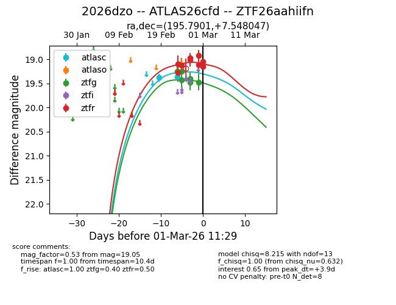
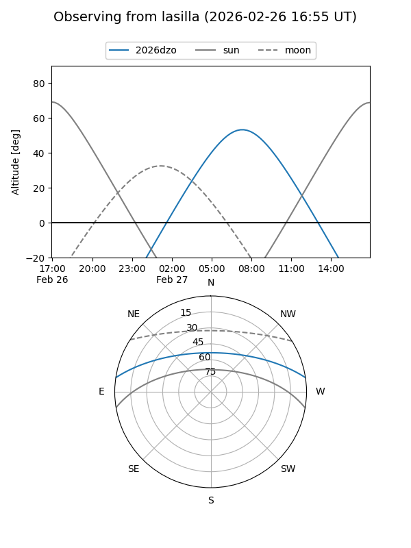
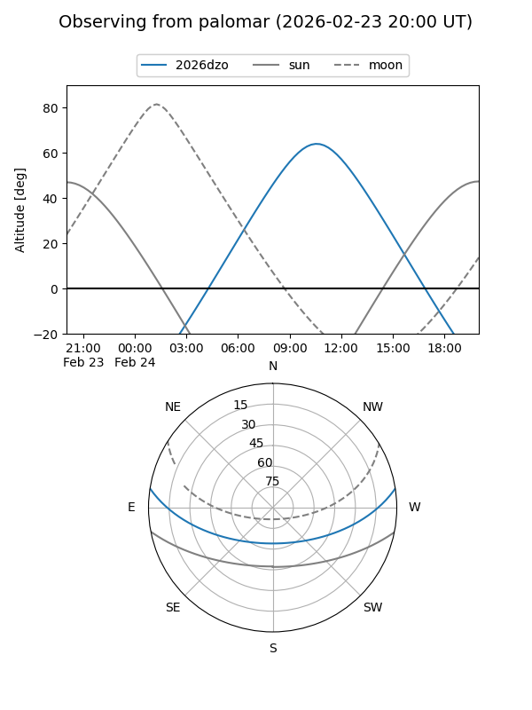
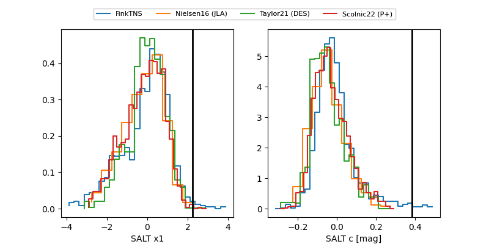

2026dzo
Target 2026dzo at 2026-03-01 11:30
Aliases and brokers:
FINK: link
Lasair: link
ALeRCE: link
TNS: link
YSE: link
alt names
ZTF26aahiifn (ztf,fink_ztf)
2026dzo (tns,yse)
ATLAS26cfd (atlas)
Coordinates:
equatorial (ra, dec) = 195.7901,+7.54805
equatorial (HMS+DMS) = 13:03:09.61,+07:32:52.97
galactic (l, b) = (311.5469,+70.22347)
Flags:
Photometry:
last atlasc=19.37, ztfg=19.48, ztfr=19.05
2 atlasc, 6 ztfg, 9 ztfr detections
Lightcurve

Visibility


Additional plots
